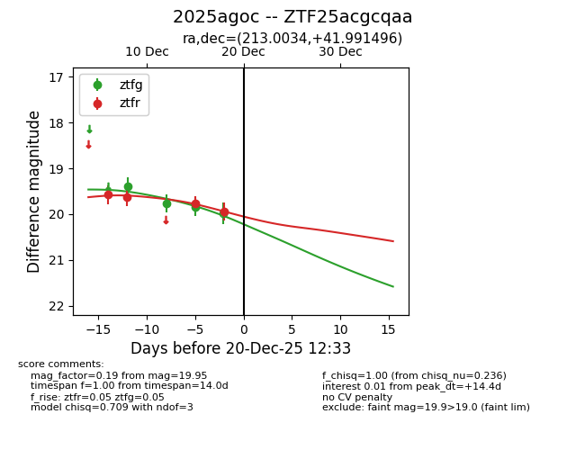
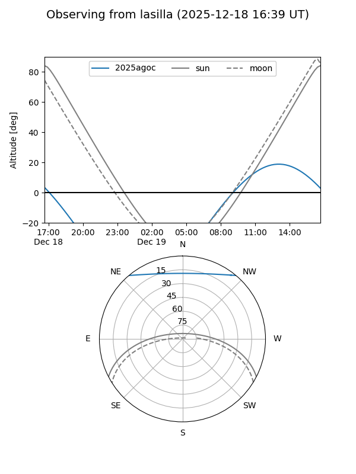
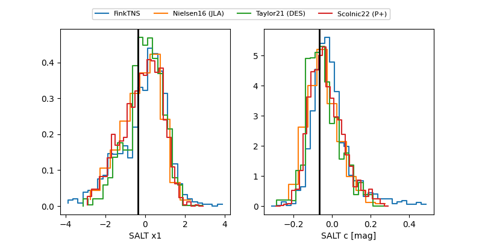

2025agoc
Target 2025agoc at 2025-12-18 15:32
Aliases and brokers:
FINK: fink-portal.org/ZTF25acgcqaa
Lasair: lasair-ztf.lsst.ac.uk/objects/ZTF25acgcqaa
ALeRCE: alerce.online/object/ZTF25acgcqaa
TNS: wis-tns.org/object/2025agoc
YSE: ziggy.ucolick.org/yse/transient_detail/2025agoc
alt names
ZTF25acgcqaa (ztf,fink_ztf)
2025agoc (tns,yse)
Coordinates:
equatorial (ra, dec) = 213.0034,+41.99150
equatorial (HMS+DMS) = 14:12:00.82,+41:59:29.38
galactic (l, b) = (80.2180,+67.83155)
Photometry
last ztfg=19.84, ztfr=19.95
3 ztfg, 4 ztfr detections
Lightcurve

Visibility


Additional plots
